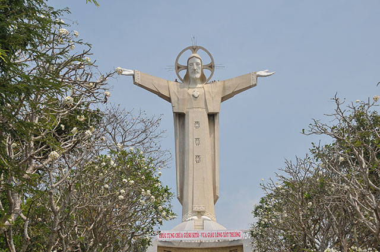
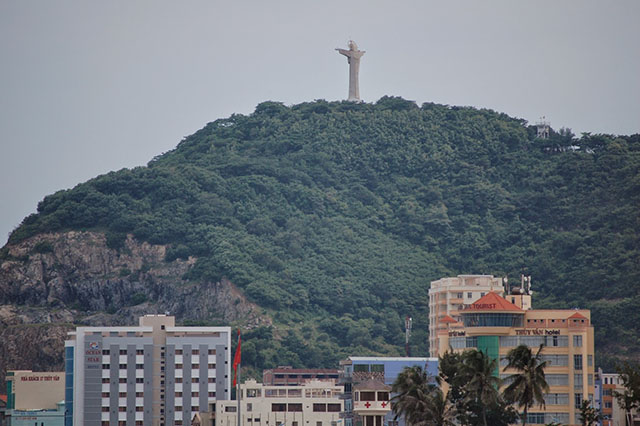
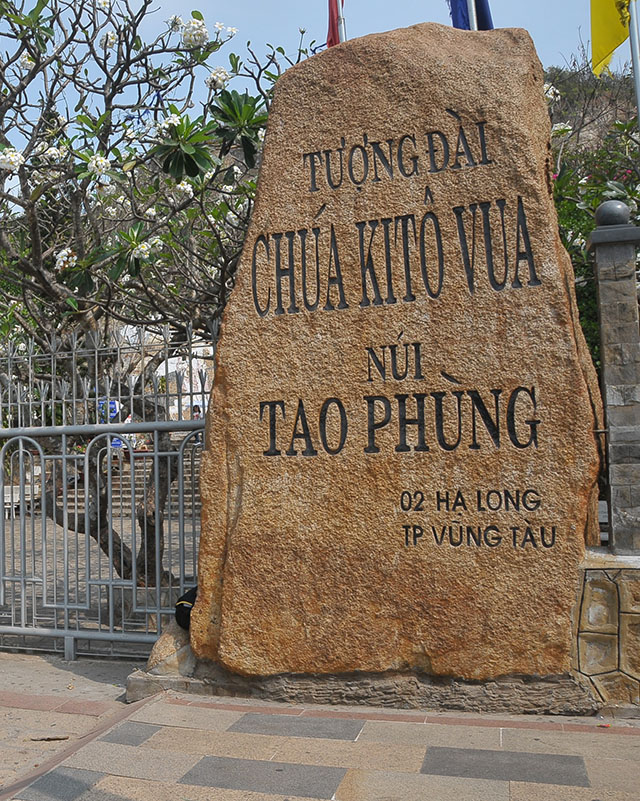
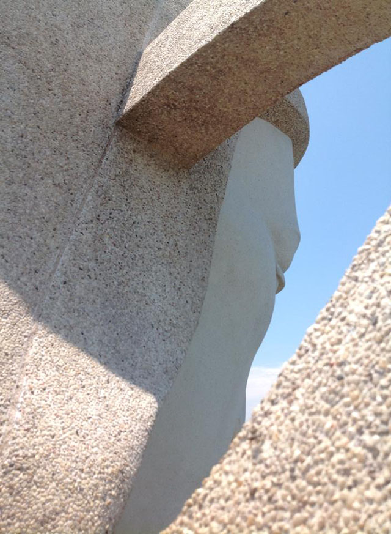
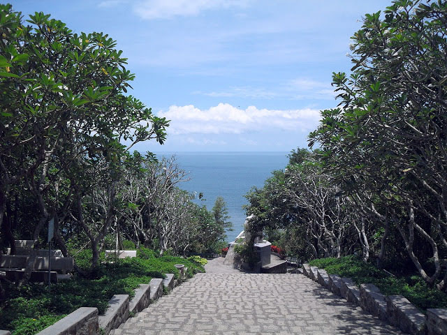

Tượng Chúa Giesu Kito Vua
Sở hữu những kỷ lục vượt trội, với vẻ đẹp cao lớn sừng sững đầy oai hùng, Tượng Chúa kitô Vua Vũng Tàu hay còn gọi là Tượng Chúa dang tay là một trong những điểm đến du lịch hấp dẫn nhất của thành phố biển Vũng Tàu. Đến với nơi đây, không chỉ là cảm giác chinh phục đỉnh núi cao mà còn là cảm giác sảng khoái khi đứng từ cánh tay tượng vươn tầm mắt ngắm nhìn toàn cảnh thành phố xinh đẹp. Hãy cùng tìm hiểu về Tượng Chúa Kitô Vua Vũng Tàu có gì mà hấp dẫn thế nhé.
GIỚI THIỆU VỀ TƯỢNG CHÚA KITO VUA
Tượng Chúa Kito Vua hay còn được gọi là Tượng Chúa dang tay, Tượng Chúa Kitô trên đỉnh núi Tao Phùng là một trong những công trình kỳ quan vĩ đại của Việt Nam khi được xác lập kỷ lục là “Tượng Chúa Giêsu lớn nhất khu vực châu Á” vào năm 2012. Bức tượng đứng sừng sững trên đỉnh núi Nhỏ (núi Tao Phùng) mang đến những trải nghiệm tuyệt vời cho du khách khi ghé thăm nơi đây.
Tượng Chúa Kito sở hữu chiều cao lên đến 32m, sải tay dài 18,3m đứng trên độ cao 170m so với mực nước biển, với hướng nhìn ra biển tuyệt đẹp. Tượng Chúa được đặt trên bệ bê tông cao 10m hình cánh cung với bức họa phù điêu “bữa tiệc ly” ở phía trước và “Đức Chúa trao chìa khóa cho Phêrô” ở mặt sau. Hào quang quanh đầu tượng được thiết kế cùng với cột thu lôi để chống sét. Tà áo tượng trổ 3 ô cửa sổ với hoa văn chữ thọ độc đáo, nhờ có 3 ô cửa sổ mà lòng tượng thoáng khí tự nhiên, cùng ánh sáng chiếu vào ban ngày sáng sủa.
Tượng chúa Kito Vua nằm ở độ cao 170m trên mực nước biển
Để lên được đôi vai tượng, bạn phải leo cầu thang xoắn ốc với 133 bậc thang. Từ đây, bạn có thể phóng tầm mắt thu gọn cả thành phố biển xinh đẹp với thiên nhiên chan hoà như núi Lớn, Bãi Dâu, Bãi Dứa, Bãi Trước, Bãi Sau…một phần biển Đông hiện ra kỳ vĩ lấp lánh. Cảm giác vừa chinh phục thiên nhiên vừa thật nhỏ bé.
Tượng Chúa Kitô vua đứng trên đỉnh núi, bao dung hiền hoà hướng ra biển như ôm lấy chúng sinh, từ nét mặt, tư thế, đến thần thái đều toát lên nét thẩm mỹ và nghệ thuật hết sức sinh động chứ không hề bị cứng nhắc, mềm mại và sáng tạo vượt trội.
Để lên được đến chỗ tượng đài, bạn còn phải trải qua chặng đường leo hơn 800 bậc thang với hoa sứ thoang thoảng và cây rợp bóng, đây cũng là thử thách cho thấy sức mạnh và lòng tín ngưỡng của những du khách mô đạo, muốn được chiêm ngưỡng và khám phá tượng Chúa.
Công trình mang nét đẹp vừa du lịch vừa tín ngưỡng đã trở thành điểm đến hấp dẫn không thể bỏ qua khi đến Vũng Tàu. Thể hiện kiến trúc điêu khắc mang nét nghệ thuật độc đáo, sáng tạo, mang sự khéo léo của bàn tay con người đặt giữa cảnh quan thiên nhiên hùng vĩ, chan hoà.
ĐỊA CHỈ TƯỢNG CHÚA DANG TAY VÀ ĐƯỜNG ĐI
Tượng Chúa dang tay toạ lạc ở địa chỉ: Phường 2, Thành phố Vũng Tàu, Bà Rịa – Vũng Tàu.